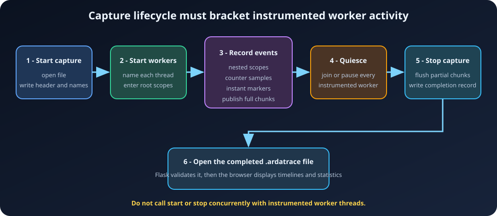

Viewer, Capture Format, and Practices
The ArdaTrace viewer is an offline local web application. Flask validates and normalizes a completed capture, then a dependency-free browser UI renders the timeline with HTML, CSS, JavaScript, and Canvas.
Start the viewer
From the repository root:
python Scripts\RunTraceViewer.py frame.ardatrace
Direct invocation exposes additional options:
python Tools\ArdaTraceViewer\app.py frame.ardatrace --port 5001
The default address is http://127.0.0.1:5000. Loopback binding keeps the
viewer local. Supplying --host or --debug is an explicit relaxation and
should only be done in a trusted environment.
To open another capture, use Open capture in the page. HTTP uploads are limited to 256 MiB and held in memory. The server does not expose arbitrary filesystem browsing.
Timeline controls
- Scroll the mouse wheel over the timeline to zoom around the pointer.
- Drag horizontally to pan.
- Hover a scope rectangle to see its label, thread, duration, start time, and scope identifier.
- Select a thread to isolate one lane.
- Enter a name filter to limit scopes, counters, markers, and aggregate rows.
- Select Reset view to restore the complete time range.
The counter panel shares the selected time range with the scope timeline. Markers appear as vertical dashed lines. Scope statistics are grouped by name and report count, total, average, minimum, and maximum duration.
Binary data flow

An .ardatrace file begins with:
- the eight-byte
ARDATRC1magic; - format version
1; - the
0x01020304byte-order marker; and - the capture's steady-clock origin in nanoseconds.
The body contains typed records:
| Record | Main fields |
|---|---|
| Name | Name identifier and UTF-8 label |
| Thread | Thread identifier and UTF-8 display name |
| Scope | Thread/name IDs, scope/parent IDs, start/end nanoseconds |
| Counter | Thread/name IDs, timestamp, double value |
| Marker | Thread/name IDs and timestamp |
| Capture end | Declares successful completion |
All integer and floating-point fields are little-endian. The C++ writer streams
full event chunks during capture and flushes partial per-thread chunks when
StopTraceCapture() runs.
The format is an internal, versioned contract. Consumers must reject unknown versions and record types rather than guessing their layout.
Validation
The native and Python readers validate structure and references before exposing a session. The Python viewer additionally validates UTF-8 labels. Checks across the readers include:
- magic, version, byte order, and completion record;
- record truncation and unknown record types;
- duplicate or reserved identifiers;
- valid UTF-8 labels with bounded lengths;
- defined name and thread references;
- finite counter values;
- scope start/end order;
- existing, same-thread parent scopes;
- parent-cycle prevention and temporal containment; and
- absence of bytes after the completion record.
This strictness distinguishes a complete capture from a crash-truncated or incompatible file.
Threading and lifecycle requirements
The recorder supports events from multiple threads, but lifecycle operations have a stronger contract:
- Call
StartTraceCapture()before instrumented workers begin. - Start or release the workers.
- Record scopes, counters, markers, and thread names concurrently.
- Join or pause all instrumented workers.
- Call
StopTraceCapture().

Do not stop while another thread is appending an event. The current recorder expects lifecycle calls to occur at a process-level synchronization point.
Troubleshooting
The viewer says the capture is incomplete
Ensure StopTraceCapture() executed successfully. Check GetTraceError() and
avoid forced process termination during finalization.
No scopes appear
- Confirm
ARDASHIR_ENABLE_TRACE=ONfor the target. - Confirm
StartTraceCapture()succeeded before entering the scopes. - Check that the target links
Ardashir::ArdaTrace. - Remove active name/thread filters in the viewer.
Thread names remain generic
Call SetCurrentTraceThreadName() from each worker thread after capture starts
or before its first recorded event.
The capture changes program performance
Reduce instrumentation density and counter sampling frequency. Trace subsystem boundaries instead of tiny operations. The recorded duration excludes event serialization after the end timestamp, but instrumentation still consumes CPU time and can perturb scheduling.
The upload is rejected
Captures larger than 256 MiB cannot be uploaded through the web endpoint. Reduce capture duration or channel density. The limit can be changed in the local viewer only after considering parsing memory requirements.
Current limitations
- Captures are offline rather than live-streamed to the viewer.
- Only CPU scopes, counters, markers, names, and thread metadata are recorded.
- There is no GPU/CPU clock calibration or GPU timestamp-query integration.
- The browser loads the normalized session in memory.
- Labels are call-site-stable rather than dynamically changing per event.